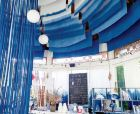
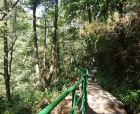
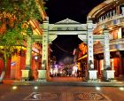

介绍
大理古城位于风光秀丽的苍山脚下，是古代南诏国和大理国的都城。这里是个适合生活的地方，当地人日出而作日落而息，闲时养花草晒太阳，加之阳光明媚温度适宜，吸引游客无数。
白天必逛
在古城，白天你可以逛逛复兴路，复兴路是古城的一条步行街，街两边有众多店铺，经营大理石雕刻、民族服饰和当地特色食品等当地特产。在各色店铺间穿行流连，可以淘些有民族特色的小东西，累了饿了，路边的小吃店也能吃到有特色的当地小吃。
古城夜生活
夜间，你可以像混在当地的人们一样，聚集在洋人街和人民路一带，这里有超多的特色酒吧和小咖啡馆，有些店里还有驻场歌手或者游人的即兴演出，热闹非凡。你尽可以在酒杯和音乐间寻觅那一份属于你的活色生香。
开放时间
全年 全天开放
服务设施
园内交通：参考价格：35元/人；地址：古城南门游客中心；游古城一圈，儿童需成人陪同
必看贴士
1. 农历三四月的大理天气晴好，民族节日也很集中，有名的当属“三月街”。此时来大理欣赏风光、感受民俗，比较适合。
2. 大理风和日丽时候很温暖舒服，但一下雨就立刻温度骤降，无论何时来大理旅行，保暖的衣物一定要带一两件。
附近景点

大理天主教堂
4.5分
直线距离166m

大理蓝续古法扎染 (古城店)
5.0分
直线距离195m

感通山泉
4.4分
直线距离263m

洋人街
4.3分
直线距离328m
相约大理主题邮局
3.3分
直线距离351m
玉洱园
4.6分
直线距离364m
复兴路
直线距离366m